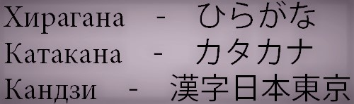

История
Представляю вам статью, которую полностью можно прочитать по ссылке
История Японии отсчитывается не с какой-то конкретной даты. Заселение территорий началось около 40 тыс. лет назад, хотя, разумеется, ни о каком государстве речи тогда не шло. Древние японцы жили небольшими общинами по 20-30 человек, занимаясь охотой, рыбалкой и собирательством. Примерно за три столетия до нашей эры из Кореи и Китая на острова были завезены технологии рисоводства и кузнечного дела. Ведение сельского хозяйства подразумевало оседлый образ жизни, а культивирование риса, требовавшего постоянного полива, привело к тому, что общины стали переселяться в долины рек. Именно с появлением сельского хозяйства племенные союзы начали объединяться в подобия небольших государств.
Первые упоминания о государствах, расположенных на территории современной Японии появились в китайских хрониках I века нашей эры. Три десятка из ста, о которых упоминают исторические хроники тех лет, наладили контакты с Китаем, отправляя туда свои посольства и дань. Под властью племени Ямато страна начала постепенно объединяться. Именно Ямато дали Японии императорскую династию, первым представителем которой был император Дзимму, взошедший на престол якобы в 660 году до нашей эры. Однако большинство историков склонны считать Дзимму мифологическим персонажем, да и само возникновение династии относить к периоду не ранее середины I века до нашей эры.
Японский язык
Японский язык (Нихонго, 日本語) относится к японской языковой семье. На нем говорят как на первом языке 122 миллиона человек, а как на втором - более 1 миллиона человек в Японии. Число носителей японского языка во всем мире оценивается почти в 123 миллиона человек.
Помимо японского, на Окинаве и соседних островах Рюкю говорят на 14 языках Рюкю. Они взаимно непонятны японцам, а в большинстве случаев и друг другу. Поскольку эти языки не могут быть поняты носителями японского языка, а также носителями других разновидностей Рюкюаней, некоторые ученые в прошлом считали их отдельными языками. Однако сегодня преобладает мнение, что они представляют собой разновидность японцев.
Азбука
В японском языке существует три системы письменности. Многие в начале изучения допускают большую ошибку, называя алфавиты иероглифами, хотя на самом деле это совсем разные вещи.
Исторически так сложилось, что в Японии используют две слоговые азбуки: хирагану и катакану. Они сосуществуют с иероглифами, которые по-японски называются кандзи.
Несколько тысяч лет назад у японцев был устный язык, но совсем не было письменности. Чтобы это исправить они позаимствовали систему письма у соседней страны — Китая.
Китайские иероглифы — это идеограммы, указывающие на значение слова. Фонетически каждый из них обозначает слог. Японцы же решили использовать их звучание без привязки к смыслу. Иными словами, японские слова начали записывать иероглифами, подходящими по фонетическому звучанию. Позднее буддийскими монахами были придуманы сами азбуки как способ упрощенного чтения и написания кандзи.
| Кандзи | Значение | Онъёми | Кунъёми |
| 一 | один | いち
ити |
ひと
хито |
| 二 | два | に
ни |
ふた
фута |
| 三 | три | さん
сан |
み
ми |
| 四 | четыре | し
си |
よ
ё |
| 五 | пять | ご
го |
いつ
ицу |
| 六 | шесть | ろく
року |
む
му |
| 七 | семь | しち
сити |
なな
нана |
| 八 | восемь | はち
хати |
や
я |
| 九 | девять | きゅう
кю: |
ここの
коконо |
| 十 | десять | じゅう
дзю: |
とお
то: |
| 百 | сто | ひゃく
хяку |
もも
момо |
| 千 | тысяча | せん
сэн |
ち
ти |
| 上 | наверху | じょう
дзё: |
うえ
уэ |
| 下 | низ | か
ка |
した
сита |
| 左 | левый | さ
са |
ひだり
хидари |
| 右 | правый | う
у |
みぎ
миги |
| 中 | середина | ちゅう
тю: |
なか
нака |
| 大 | большой | だい
дай |
おお
о: |
| 小 | маленький, наименьший по размеру | しょう
сё: |
ちいさい
ти:сай |
| 月 | луна | げつ
гэцу |
つき
цуки |
| 日 | солнце | にち
нити |
か
ка |
Ссылка на источник
Литература
К сожелению данная статья в разработке
Искусство
К сожелению данная статья в разработке